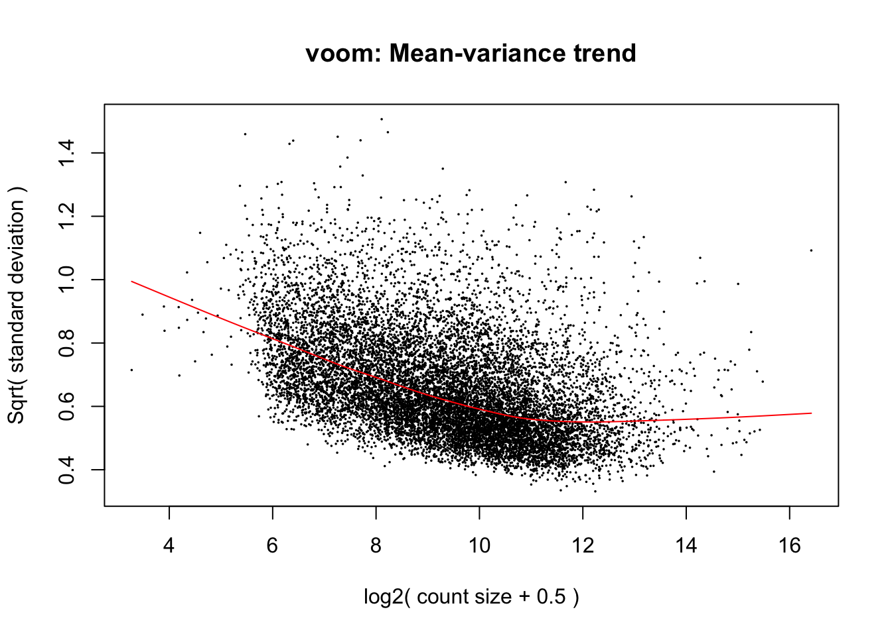

DE_genes_pairwise_ts_specific
Lauren Blake
August 22, 2016
The goal of this script is to find a list of differentially expressed genes between tissues and between species. The majority of the code for this section was written by Julien Roux.
Note: the expression data used here is the final filtering scheme of only keeping genes with log2(CPM) > 1.5 in at least 24 samples.
Part 1: Find genes that are DE between different tissues or species, pairwise.
# Load libraries
library("gplots")
Attaching package: 'gplots'The following object is masked from 'package:stats':
lowesslibrary("ggplot2")
library("RColorBrewer")
library("scales")
library("edgeR")Loading required package: limmalibrary("R.utils")Loading required package: R.ooLoading required package: R.methodsS3R.methodsS3 v1.7.1 (2016-02-15) successfully loaded. See ?R.methodsS3 for help.R.oo v1.20.0 (2016-02-17) successfully loaded. See ?R.oo for help.
Attaching package: 'R.oo'The following objects are masked from 'package:methods':
getClasses, getMethodsThe following objects are masked from 'package:base':
attach, detach, gc, load, saveR.utils v2.3.0 (2016-04-13) successfully loaded. See ?R.utils for help.
Attaching package: 'R.utils'The following object is masked from 'package:utils':
timestampThe following objects are masked from 'package:base':
cat, commandArgs, getOption, inherits, isOpen, parse, warningslibrary("plyr")
library("limma")
library("VennDiagram")Loading required package: gridLoading required package: futile.loggersource("~/Reg_Evo_Primates/ashlar-trial/analysis/functions.R")
# Load colors
colors <- colorRampPalette(c(brewer.pal(9, "Blues")[1],brewer.pal(9, "Blues")[9]))(100)
pal <- c(brewer.pal(9, "Set1"), brewer.pal(8, "Set2"), brewer.pal(12, "Set3"))
# Import samples
samples <- read.delim("~/Reg_Evo_Primates/ashlar-trial/data/Sample_info_RNAseq_limma.txt")
# Eliminate H1H
samples <- samples[-17,]
dim(samples)[1] 47 4# Make labels
labels <- paste(samples$Species, samples$Tissue, sep=" ")# Load the data and normalize it (TMM+CPM+random effect+voom+cyclic loess normalization)
counts_genes_in_cutoff <- read.delim("~/Reg_Evo_Primates/ashlar-trial/data/counts_12184.txt")
dim(counts_genes_in_cutoff)[1] 12184 47# Take the TMM of the genes that meet the criteria
dge_in_cutoff <- DGEList(counts=as.matrix(counts_genes_in_cutoff), genes=rownames(counts_genes_in_cutoff), group = as.character(t(labels)))
dge_in_cutoff <- calcNormFactors(dge_in_cutoff)
# Perform voom
## Voom requires a design matrix as input
## To make contrasts easier to formulate, we rename factors species and tissue in a single factor
condition <- factor(paste(samples$Species,samples$Tissue,sep="."))
design <- model.matrix(~ 0 + condition)
colnames(design) <- gsub("condition", "", dput(colnames(design)))c("conditionChimp.heart", "conditionChimp.kidney", "conditionChimp.liver",
"conditionChimp.lung", "conditionHuman.heart", "conditionHuman.kidney",
"conditionHuman.liver", "conditionHuman.lung", "conditionRhesus.heart",
"conditionRhesus.kidney", "conditionRhesus.liver", "conditionRhesus.lung"
)# Voom with individual as a random variable
cpm.voom.cyclic <- voom(dge_in_cutoff, design, normalize.method="cyclicloess", plot=T)
corfit <- duplicateCorrelation(cpm.voom.cyclic, design, block=samples$Individual)
# corfit$consensus = 0.2006188
# Final voom on filtered data
cpm.voom.cyclic.ran <- voom(dge_in_cutoff, design, normalize.method="cyclicloess", plot=TRUE, block=samples$Individual, correlation=corfit$consensus)
We saw in the technical factor analysis that the hours post-mortem that the sample was collected was confounded by species. This could affect the quality of RNA. We will use RIN score as a proxy for RNA quality. Let see how adding RIN score into the model (via the design matrix) affects the amount of tissue-specific DE genes.
Initial running of limma
# Retrieve RIN score for each sample
RNA_seq_info <- read.csv("~/Reg_Evo_Primates/ashlar-trial/data/RNA_seq_info.csv")
RIN <- as.data.frame(RNA_seq_info[,22])
RIN <- RIN[-31,]
# Remake design matrix
condition <- factor(paste(samples$Species,samples$Tissue,sep="."))
condition <- as.data.frame(condition)
condition <- condition[-31,]
design <- model.matrix(~ 0 + condition + RIN)
colnames(design) <- gsub("condition", "", dput(colnames(design)))c("conditionChimp.heart", "conditionChimp.kidney", "conditionChimp.liver",
"conditionChimp.lung", "conditionHuman.heart", "conditionHuman.kidney",
"conditionHuman.liver", "conditionHuman.lung", "conditionRhesus.heart",
"conditionRhesus.kidney", "conditionRhesus.liver", "conditionRhesus.lung",
"RIN")# Run lmFit and eBayes in limma (we have to take out sample 31 because its RIN score was not recorded)
samples <- samples[-31,]
fit.cpm.voom.cyclic.ran <- lmFit(cpm.voom.cyclic.ran[,-31], design, block=samples$Individual, correlation=corfit$consensus)
fit.cpm.voom.cyclic.ran <- eBayes(fit.cpm.voom.cyclic.ran)
# MA Plots
## If 'MA' is an 'MArrayLM' object, then the plot is a fitted model MA-plot in which the estimated coefficient is on the y-axis and the average A-value is on the x-axis.
limma::plotMA(fit.cpm.voom.cyclic.ran, array=1, xlab="average coefficient", ylab="estimated coefficient")Warning in plot.window(...): "array" is not a graphical parameterWarning in plot.xy(xy, type, ...): "array" is not a graphical parameterWarning in axis(side = side, at = at, labels = labels, ...): "array" is not
a graphical parameter
Warning in axis(side = side, at = at, labels = labels, ...): "array" is not
a graphical parameterWarning in box(...): "array" is not a graphical parameterWarning in title(...): "array" is not a graphical parameter
## - Potential caveat: variances could be different between human, chimp and rhesus (see Gordon Smyth email, 7 June 2013).
## We look at the standard error for each condition
hist(fit.cpm.voom.cyclic.ran$stdev.unscaled * fit.cpm.voom.cyclic.ran$sigma, breaks=100)
hist(log2(fit.cpm.voom.cyclic.ran$stdev.unscaled * fit.cpm.voom.cyclic.ran$sigma), breaks=100)
boxplot(log2(fit.cpm.voom.cyclic.ran$stdev.unscaled * fit.cpm.voom.cyclic.ran$sigma))
## This seems to be pretty comparable between conditions. The human heart is higher, probably because of H1H missing and H3H with a bit strange behavior
stderror <- log2(fit.cpm.voom.cyclic.ran$stdev.unscaled * fit.cpm.voom.cyclic.ran$sigma)
boxplot(list(stderror[,1:4], stderror[,5:8], stderror[,9:12]))
## A bit higher for human, and a bit lower for rhesus
boxplot(list(stderror[,2:4], stderror[,6:8], stderror[,8:12])) ## excluding heart samples 
Differential expression between 2 tissues (in the same species)
# Make the contrast matrix
cm4 <- makeContrasts(
ChimpKidneyvsLiver = Chimp.kidney-Chimp.liver,
HumanKidneyvsLiver = Human.kidney-Human.liver,
RhesusKidneyvsLiver = Rhesus.kidney-Rhesus.liver,
ChimpKidneyvsLung = Chimp.kidney-Chimp.lung,
HumanKidneyvsLung = Human.kidney-Human.lung,
RhesusKidneyvsLung = Rhesus.kidney-Rhesus.lung,
ChimpKidneyvsHeart = Chimp.kidney-Chimp.heart,
HumanKidneyvsHeart = Human.kidney-Human.heart,
RhesusKidneyvsHeart = Rhesus.kidney-Rhesus.heart,
ChimpHeartvsLiver = Chimp.heart-Chimp.liver,
HumanHeartvsLiver = Human.heart-Human.liver,
RhesusHeartvsLiver = Rhesus.heart-Rhesus.liver,
ChimpHeartvsLung = Chimp.heart-Chimp.lung,
HumanHeartvsLung = Human.heart-Human.lung,
RhesusHeartvsLung = Rhesus.heart-Rhesus.lung,
ChimpLungvsLiver = Chimp.lung-Chimp.liver,
HumanLungvsLiver = Human.lung-Human.liver,
RhesusLungvsLiver = Rhesus.lung-Rhesus.liver,
levels=design
)
# Run the linear model
fit4 <- contrasts.fit(fit.cpm.voom.cyclic.ran, cm4)
fit4 <- eBayes(fit4)
# Order by BH value
top4 <- list(ChimpKidneyvsLiver=topTable(fit4, coef=1, adjust="BH", number=Inf, sort.by="none"), ChimpKidneyvsLung=topTable(fit4, coef=4, adjust="BH", number=Inf, sort.by="none"), ChimpKidneyvsHeart=topTable(fit4, coef=7, adjust="BH", number=Inf, sort.by="none"), ChimpHeartvsLiver=topTable(fit4, coef=10, adjust="BH", number=Inf, sort.by="none"), ChimpHeartvsLung=topTable(fit4, coef=13, adjust="BH", number=Inf, sort.by="none"), ChimpLungvsLiver=topTable(fit4, coef=16, adjust="BH", number=Inf, sort.by="none"), HumanKidneyvsLiver=topTable(fit4, coef=2, adjust="BH", number=Inf, sort.by="none"), HumanKidneyvsLung=topTable(fit4, coef=5, adjust="BH", number=Inf, sort.by="none"), HumanKidneyvsHeart=topTable(fit4, coef=8, adjust="BH", number=Inf, sort.by="none"), HumanHeartvsLiver=topTable(fit4, coef=11, adjust="BH", number=Inf, sort.by="none"), HumanHeartvsLung=topTable(fit4, coef=14, adjust="BH", number=Inf, sort.by="none"), HumanLungvsLiver=topTable(fit4, coef=17, adjust="BH", number=Inf, sort.by="none"), RhesusKidneyvsLiver=topTable(fit4, coef=3, adjust="BH", number=Inf, sort.by="none"), RhesusKidneyvsLung=topTable(fit4, coef=6, adjust="BH", number=Inf, sort.by="none"), RhesusKidneyvsHeart=topTable(fit4, coef=9, adjust="BH", number=Inf, sort.by="none"), RhesusHeartvsLiver=topTable(fit4,coef=12, adjust="BH", number=Inf, sort.by="none"), RhesusHeartvsLung=topTable(fit4, coef=15, adjust="BH", number=Inf, sort.by="none"), RhesusLungvsLiver=topTable(fit4, coef=18, adjust="BH", number=Inf, sort.by="none"))
## For a consistent FDR correction across contrasts, use decideTests in combination with method="global" to adjust multiple testing across all genes and multiple related contrasts
summary(decideTests(fit4, method="global", p.value=0.01)) ChimpKidneyvsLiver HumanKidneyvsLiver RhesusKidneyvsLiver
-1 2408 2326 2804
0 7338 7530 6741
1 2438 2328 2639
ChimpKidneyvsLung HumanKidneyvsLung RhesusKidneyvsLung
-1 2243 1788 2812
0 7532 8571 6381
1 2409 1825 2991
ChimpKidneyvsHeart HumanKidneyvsHeart RhesusKidneyvsHeart
-1 2482 2264 3153
0 7274 7786 6166
1 2428 2134 2865
ChimpHeartvsLiver HumanHeartvsLiver RhesusHeartvsLiver ChimpHeartvsLung
-1 3169 2543 3512 2666
0 5783 7047 5048 6912
1 3232 2594 3624 2606
HumanHeartvsLung RhesusHeartvsLung ChimpLungvsLiver HumanLungvsLiver
-1 1902 3312 3140 2349
0 8272 5423 5943 7539
1 2010 3449 3101 2296
RhesusLungvsLiver
-1 3683
0 5058
1 3443colnames(decideTests(fit4, method="global", p.value=0.01)) [1] "ChimpKidneyvsLiver" "HumanKidneyvsLiver" "RhesusKidneyvsLiver"
[4] "ChimpKidneyvsLung" "HumanKidneyvsLung" "RhesusKidneyvsLung"
[7] "ChimpKidneyvsHeart" "HumanKidneyvsHeart" "RhesusKidneyvsHeart"
[10] "ChimpHeartvsLiver" "HumanHeartvsLiver" "RhesusHeartvsLiver"
[13] "ChimpHeartvsLung" "HumanHeartvsLung" "RhesusHeartvsLung"
[16] "ChimpLungvsLiver" "HumanLungvsLiver" "RhesusLungvsLiver" # Make the Venn diagrams
for(i in 1:6){
title <- sub("Chimp", "", names(top4)[i])
title <- sub("vs", " vs. ", title)
mylist <- list()
mylist[["Chimpanzee"]] <- row.names(top4[[names(top4)[i]]])[top4[[names(top4)[i]]]$adj.P.Val < 0.01]
mylist[["Human"]] <- row.names(top4[[names(top4)[i+6]]])[top4[[names(top4)[i+6]]]$adj.P.Val < 0.01]
mylist[["Rhesus macaque"]] <- row.names(top4[[names(top4)[i+12]]])[top4[[names(top4)[i+12]]]$adj.P.Val < 0.01]
venn.diagram(mylist, filename = paste0(sub("Chimp", "", names(top4)[i]), ".png"), imagetype = "png", main=title, fill=pal[1:3], alpha=c(0.5, 0.5, 0.5), cex=1.5 , lty=1, height=2000, width=2000);
}
rl <- lapply(list("HeartvsLiver.png", "HeartvsLung.png", "KidneyvsHeart.png", "KidneyvsLiver.png", "KidneyvsLung.png", "LungvsLiver.png"), png::readPNG)
gl <- lapply(rl, grid::rasterGrob)
do.call(gridExtra::grid.arrange, gl)
Differential expression between 2 species (across tissues)
# Make contrast matrix
cm2 <- makeContrasts(
## pairwise species contrasts in each tissue
KidneyChimpvsHuman = Chimp.kidney-Human.kidney,
KidneyChimpvsRhesus = Chimp.kidney-Rhesus.kidney,
KidneyHumanvsRhesus = Human.kidney-Rhesus.kidney,
HeartChimpvsHuman = Chimp.heart-Human.heart,
HeartChimpvsRhesus = Chimp.heart-Rhesus.heart,
HeartHumanvsRhesus = Human.heart-Rhesus.heart,
LiverChimpvsHuman = Chimp.liver-Human.liver,
LiverChimpvsRhesus = Chimp.liver-Rhesus.liver,
LiverHumanvsRhesus = Human.liver-Rhesus.liver,
LungChimpvsHuman = Chimp.lung-Human.lung,
LungChimpvsRhesus = Chimp.lung-Rhesus.lung,
LungHumanvsRhesus = Human.lung-Rhesus.lung,
levels=design
)
# Linear model
fit2 <- contrasts.fit(fit.cpm.voom.cyclic.ran, cm2)
fit2 <- eBayes(fit2)
# Order by BH values
top2 <- list(ChimpvsHuman_Kidney=topTable(fit2, coef=1, adjust="BH", number=Inf, sort.by="none"), ChimpvsRhesus_Kidney=topTable(fit2, coef=2, adjust="BH", number=Inf, sort.by="none"), HumanvsRhesus_Kidney=topTable(fit2, coef=3, adjust="BH", number=Inf, sort.by="none"), ChimpvsHuman_Heart=topTable(fit2, coef=4, adjust="BH", number=Inf, sort.by="none"), ChimpvsRhesus_Heart=topTable(fit2, coef=5, adjust="BH", number=Inf, sort.by="none"), HumanvsRhesus_Heart=topTable(fit2, coef=6, adjust="BH", number=Inf, sort.by="none"), ChimpvsHuman_Liver=topTable(fit2, coef=7, adjust="BH", number=Inf, sort.by="none"), ChimpvsRhesus_Liver=topTable(fit2, coef=8, adjust="BH", number=Inf, sort.by="none"), HumanvsRhesus_Liver=topTable(fit2, coef=9, adjust="BH", number=Inf, sort.by="none"), ChimpvsHuman_Lung=topTable(fit2, coef=10, adjust="BH", number=Inf, sort.by="none"), ChimpvsRhesus_Lung=topTable(fit2, coef=11, adjust="BH", number=Inf, sort.by="none"), HumanvsRhesus_Lung=topTable(fit2, coef=12, adjust="BH", number=Inf, sort.by="none"))
# Adjust FDR
summary(decideTests(fit2, method="global", p.value=0.01)) KidneyChimpvsHuman KidneyChimpvsRhesus KidneyHumanvsRhesus
-1 670 1393 1324
0 10937 9262 9486
1 577 1529 1374
HeartChimpvsHuman HeartChimpvsRhesus HeartHumanvsRhesus
-1 1224 1754 2221
0 9702 8803 8054
1 1258 1627 1909
LiverChimpvsHuman LiverChimpvsRhesus LiverHumanvsRhesus
-1 1030 1689 1628
0 10230 8758 8884
1 924 1737 1672
LungChimpvsHuman LungChimpvsRhesus LungHumanvsRhesus
-1 598 1117 1425
0 11118 9925 9301
1 468 1142 1458colnames(decideTests(fit2, method="global", p.value=0.01)) [1] "KidneyChimpvsHuman" "KidneyChimpvsRhesus" "KidneyHumanvsRhesus"
[4] "HeartChimpvsHuman" "HeartChimpvsRhesus" "HeartHumanvsRhesus"
[7] "LiverChimpvsHuman" "LiverChimpvsRhesus" "LiverHumanvsRhesus"
[10] "LungChimpvsHuman" "LungChimpvsRhesus" "LungHumanvsRhesus" # Make the Venn diagrams
# Make the labels
for(i in 1:3){
# title <- sub("Kidney", "",top2_names[i])
title <- sub("_Kidney", "", names(top2)[i])
title <- sub("vs", " vs. ", title)
mylist <- list()
mylist[["Kidney"]] <- row.names(top2[[names(top2)[i]]])[top2[[names(top2)[i]]]$adj.P.Val < 0.01]
mylist[["Liver"]] <- row.names(top2[[names(top2)[i+3]]])[top2[[names(top2)[i+3]]]$adj.P.Val < 0.01]
mylist[["Lung"]] <- row.names(top2[[names(top2)[i+6]]])[top2[[names(top2)[i+6]]]$adj.P.Val < 0.01]
mylist[["Heart"]] <- row.names(top2[[names(top2)[i+9]]])[top2[[names(top2)[i+9]]]$adj.P.Val < 0.01]
venn.diagram(mylist, filename = paste0(sub("_Kidney", "", names(top2)[i]), ".png"), imagetype = "png", main=title, fill = pal[1:4], alpha=c(0.5, 0.5, 0.5, 0.5), cex=1.5 , lty=1, height=2000, width=2000);
}
rl <- lapply(list("Chimpanzee vs Human.png", "Chimpanzee vs Rhesus macaque.png", "Human vs Rhesus macaque.png"), png::readPNG)
gl <- lapply(rl, grid::rasterGrob)
do.call(gridExtra::grid.arrange, gl)
Differential expression between 3 species (in the same tissue)
for(i in 1:4){
title <- sub("ChimpvsHuman_", "", names(top2)[(i*3)-2])
mylist <- list()
mylist[["Chimp vs. Human"]] <- row.names(top2[[names(top2)[(i*3)-2]]])[top2[[names(top2)[(i*3)-2]]]$adj.P.Val < 0.01]
mylist[["Chimp vs. Rhesus"]] <- row.names(top2[[names(top2)[(i*3)-1]]])[top2[[names(top2)[(i*3)-1]]]$adj.P.Val < 0.01]
mylist[["Human vs. Rhesus"]] <- row.names(top2[[names(top2)[(i*3)]]])[top2[[names(top2)[(i*3)]]]$adj.P.Val < 0.01]
venn.diagram(mylist, filename = paste0(title, "_all_species.png"), imagetype = "png", main=title, fill=pal[1:3], alpha=c(0.5, 0.5, 0.5), cex=1.5 , lty=1, height=2000, width=2000, margin=0.1, cat.dist=0.1);
}
rl <- lapply(list("Kidney_all_species.png", "Liver_all_species.png", "Lung_all_species.png", "Heart_all_species.png"), png::readPNG)
gl <- lapply(rl, grid::rasterGrob)
do.call(gridExtra::grid.arrange, gl)
To do: look more at directionality A gene could be DE between humans and chimps, upregulated in chimps as well as DE between humans and rhesus but be downregulated in rhesus.
Part 2: Tissue specific expression in and across species
# Make the contrast matrix
cm3 <- makeContrasts(
ChimpKidneyvsOthers = Chimp.kidney-(Chimp.liver+Chimp.heart+Chimp.lung)/3,
HumanKidneyvsOthers = Human.kidney-(Human.liver+Human.heart+Human.lung)/3,
RhesusKidneyvsOthers = Rhesus.kidney-(Rhesus.liver+Rhesus.heart+Rhesus.lung)/3,
ChimpLivervsOthers = Chimp.liver-(Chimp.kidney+Chimp.heart+Chimp.lung)/3,
HumanLivervsOthers = Human.liver-(Human.kidney+Human.heart+Human.lung)/3,
RhesusLivervsOthers = Rhesus.liver-(Rhesus.kidney+Rhesus.heart+Rhesus.lung)/3,
ChimpHeartvsOthers = Chimp.heart-(Chimp.liver+Chimp.kidney+Chimp.lung)/3,
HumanHeartvsOthers = Human.heart-(Human.liver+Human.kidney+Human.lung)/3,
RhesusHeartvsOthers = Rhesus.heart-(Rhesus.liver+Rhesus.kidney+Rhesus.lung)/3,
ChimpLungvsOthers = Chimp.lung-(Chimp.liver+Chimp.heart+Chimp.kidney)/3,
HumanLungvsOthers = Human.lung-(Human.liver+Human.heart+Human.kidney)/3,
RhesusLungvsOthers = Rhesus.lung-(Rhesus.liver+Rhesus.heart+Rhesus.kidney)/3,
levels=design
)
fit3 <- contrasts.fit(fit.cpm.voom.cyclic.ran, cm3)
fit3 <- eBayes(fit3)
# Find the top hits by BH adjusted p-value
top3 <- list(ChimpKidney=topTable(fit3, coef=1, adjust="BH", number=Inf, sort.by="none"), ChimpLiver=topTable(fit3, coef=4, adjust="BH", number=Inf, sort.by="none"), ChimpHeart=topTable(fit3, coef=7, adjust="BH", number=Inf, sort.by="none"), ChimpLung=topTable(fit3, coef=10, adjust="BH", number=Inf, sort.by="none"), HumanKidney=topTable(fit3, coef=2, adjust="BH", number=Inf, sort.by="none"), HumanLiver=topTable(fit3, coef=5, adjust="BH", number=Inf, sort.by="none"), HumanHeart=topTable(fit3, coef=8, adjust="BH", number=Inf, sort.by="none"), HumanLung=topTable(fit3, coef=11, adjust="BH", number=Inf, sort.by="none"), RhesusKidney=topTable(fit3, coef=3, adjust="BH", number=Inf, sort.by="none"), RhesusLiver=topTable(fit3, coef=6, adjust="BH", number=Inf, sort.by="none"), RhesusHeart=topTable(fit3, coef=9, adjust="BH", number=Inf, sort.by="none"), RhesusLung=topTable(fit3, coef=12, adjust="BH", number=Inf, sort.by="none"))
# Find number of DE genes at FDR cutoff < 1% for each tissue in all 3 species
summary(top3$ChimpKidney$adj.P.Val < 0.01 & top3$HumanKidney$adj.P.Val < 0.01 & top3$RhesusKidney$adj.P.Val < 0.01) # 1970 Mode FALSE TRUE NA's
logical 10214 1970 0 summary(top3$ChimpHeart$adj.P.Val < 0.01 & top3$HumanHeart$adj.P.Val < 0.01 & top3$RhesusHeart$adj.P.Val < 0.01) # 2738 Mode FALSE TRUE NA's
logical 9446 2738 0 summary(top3$ChimpLiver$adj.P.Val < 0.01 & top3$HumanLiver$adj.P.Val < 0.01 & top3$RhesusLiver$adj.P.Val < 0.01) # 3502 Mode FALSE TRUE NA's
logical 8682 3502 0 summary(top3$ChimpLung$adj.P.Val < 0.01 & top3$HumanLung$adj.P.Val < 0.01 & top3$RhesusLung$adj.P.Val < 0.01) # 2610 Mode FALSE TRUE NA's
logical 9574 2610 0 # Make the Venn diagrams
# Make the labels
#for(i in 1:4){
# title <- sub("Kidney", "",top2_names[i])
# title <- sub("Chimp", "", names(top3)[i])
# title <- sub("vs", " vs. ", title)
# mylist <- list()
# mylist[["Kidney"]] <- row.names(top3[[names(top3)[i]]])[top3[[names(top3)[i]]]$adj.P.Val < 0.01]
# mylist[["Liver"]] <- #row.names(top3[[names(top3)[i+3]]])[top3[[names(top3)[i+3]]]$adj.P.Val < 0.01]
# mylist[["Lung"]] <- row.names(top3[[names(top3)[i+6]]])[top3[[names(top3)[i+6]]]$adj.P.Val < 0.01]
# mylist[["Heart"]] <- #row.names(top3[[names(top3)[i+9]]])[top3[[names(top3)[i+9]]]$adj.P.Val < 0.01]
#venn.diagram(mylist, filename = paste0(sub("Chimp", "", names(top3)[i]), ".png"), imagetype = "png", main=title, fill = pal[1:4], alpha=c(0.5, 0.5, 0.5, 0.5), cex=1.5 , lty=1, height=2000, width=2000);
#}
#rl <- lapply(list("Kidney.png", "Liver.png", "Lung.png", "Heart.png"), png::readPNG)
#gl <- lapply(rl, grid::rasterGrob)
#do.call(gridExtra::grid.arrange, gl)
Tissues <- c("Heart", "Kidney", "Liver", "Lung")
for(i in 1:4){
title <- paste(Tissues[i], "specific DE genes", sep=" ")
mylist <- list()
mylist[["Chimpanzee"]] <- row.names(top3[[names(top3)[i]]])[top3[[names(top3)[i]]]$adj.P.Val < 0.01]
mylist[["Human"]] <- row.names(top3[[names(top3)[i+4]]])[top3[[names(top3)[i+4]]]$adj.P.Val < 0.01]
mylist[["Rhesus Macaque"]] <- row.names(top3[[names(top3)[i+8]]])[top3[[names(top3)[i+8]]]$adj.P.Val < 0.01]
venn.diagram(mylist, filename = paste(Tissues[i], "specific DE genes.png", sep=" "), imagetype = "png", main=title, cex=1.5 , fill = pal[1:3], lty=1, height=2000, width=2000)
}
# View the Venn Diagram
rl <- lapply(list("Heart specific DE Genes.png", "Kidney specific DE Genes.png", "Liver specific DE Genes.png", "Lung specific DE Genes.png"), png::readPNG)
gl <- lapply(rl, grid::rasterGrob)
do.call(gridExtra::grid.arrange, gl)
Next to do: Variance analysis for the 3 tissues that the one tissue was different from. We are interested in situations where there is a big difference between one tissue and the other three but only a small variance between the three to count as truly “tissue specific”.